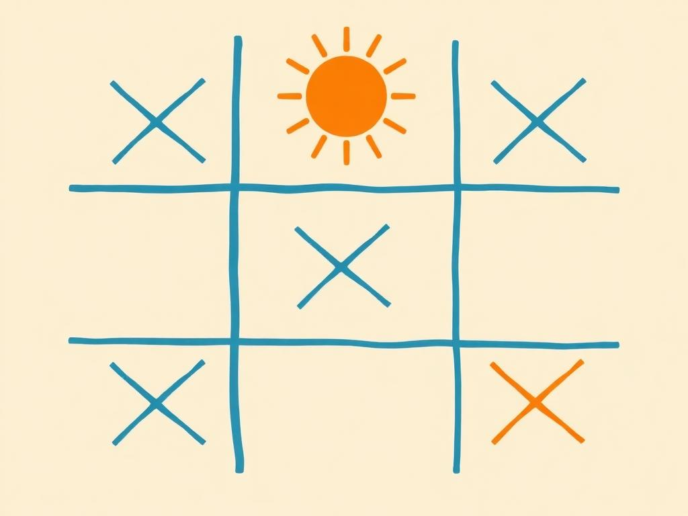

Desenvolvedor Backend · São José dos Pinhais · BR
JOÃO AIUB
RIBEIRO
أيوب
Desenvolvedor Backend na Next Shipping. Construo e evoluo sistemas corporativos — ERP, CRM e plataforma de ensino — com Node.js, TypeScript, AdonisJS e SQL. E nas horas vagas, jogos no navegador, como o Gecko.
Experiência
(A) / Next Shipping-
jan 2022 — Presente
Desenvolvedor Backend
Next Shipping
Desenvolvimento e evolução dos sistemas da empresa: ERP e CRM corporativos (AdonisJS, TypeScript, MySQL), plataforma de ensino Next Academy (com um pouco de React no frontend), automações entre sistemas com n8n e sustentação do ERP HeadCargo (SQL Server/T-SQL). Atuação no ciclo completo, da análise de requisitos e APIs até troubleshooting e melhorias de performance.
Formação & Publicação
(B) / AcadêmicoFormação
Pós-graduação em Data Science
Bacharelado em Engenharia de Software
Técnico em Desenvolvimento de Sistemas
Publicação
A influência da democracia de dados na agilidade organizacional
Estudo de caso sobre como a democratização dos dados impacta a agilidade de uma empresa de serviços financeiros.
Projetos
(C) / 03 ativosGecko
Jogo · Vercel
Plataforma 2D upscrolling: ajude a lagartixa encantada a escalar cenários até a Maçã Divina.
Jogar →
Jogo da Velha
Jogo · GitHub Pages
Dois jogadores em duelo local de X e O, com placar e reinício rápido — HTML, CSS e JS puro.
Jogar →Cat Simulator
Disciplina · Dev de Jogos
Feito na matéria de Desenvolvimento de Jogos, 8º período de Engenharia de Software.
Ver no GitHub →